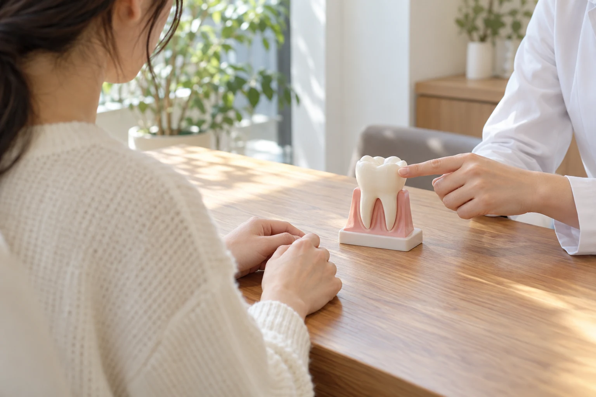
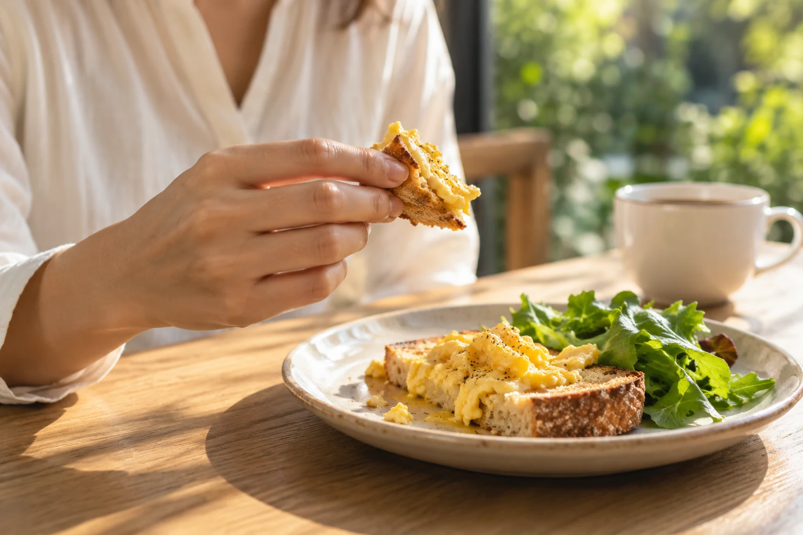
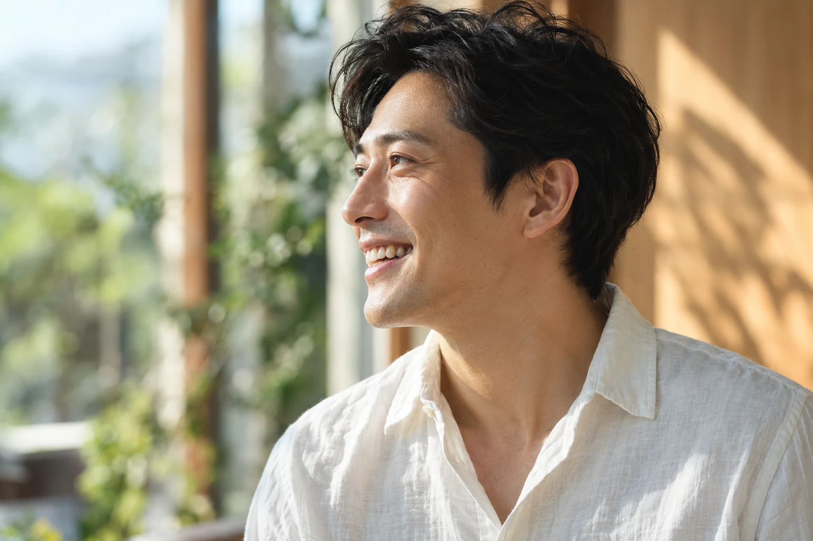
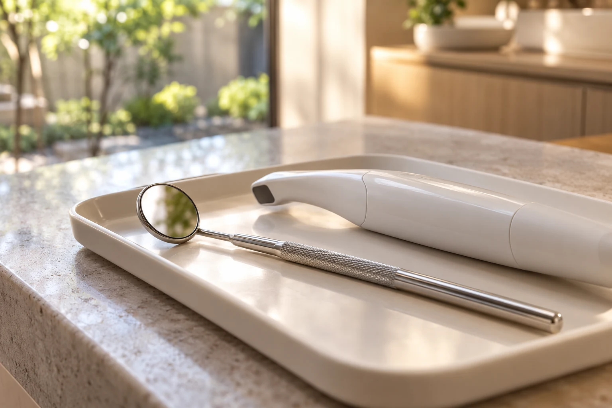
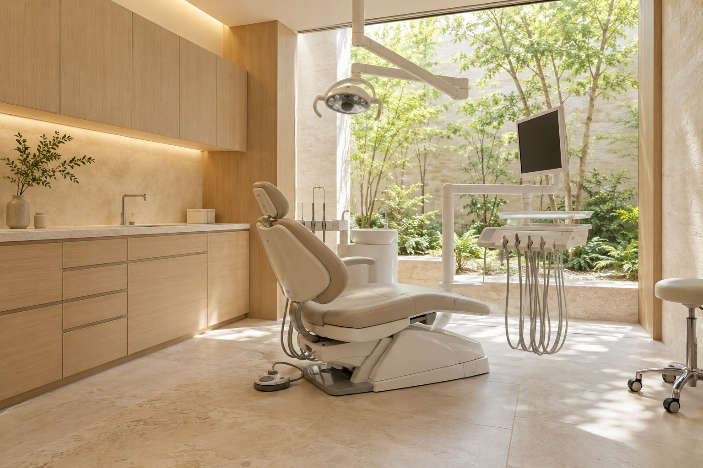
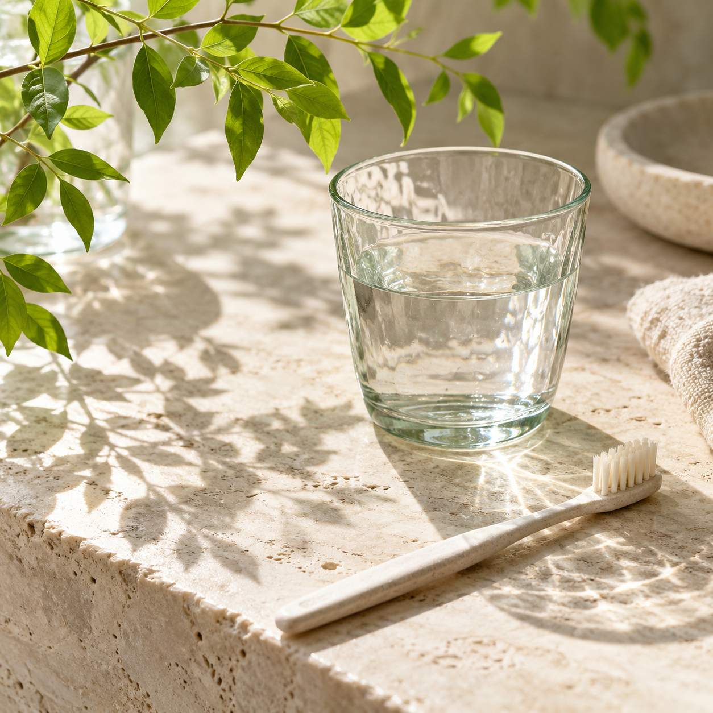

YOHAKU DENTAL / CONCEPT 2026
MAKE ROOM FOR A LITTLE CARE.
話す。食べる。笑う。その毎日を、これからも。
歯とお口の気になることを、一緒に考える歯科へ。
SCROLL TO EXPLORE 01 05
TALK. EAT. SMILE.YOHAKU DENTAL — CONCEPT
THE EVERYDAY, IN THREE MOMENTS.01 / 03
01 / TALK
相談から始まる歯科の体験を考えました。
話す。
気になることを、
気兼ねなく話せるように。
相談から始まる歯科の体験を考えました。

02 / EAT
日々のお口のケアを相談するきっかけに。
食べる。
いつもの食事を、
これからも楽しむために。
日々のお口のケアを相談するきっかけに。

03 / SMILE
一緒に考えるための相談を。
笑う。
歯並びも、見た目も。
自分の希望を伝えることから。
一緒に考えるための相談を。

SCROLL TO CHANGE THE SCENEFICTIONAL DENTAL CONCEPT
01 / OUR PHILOSOPHY
歯を診る、その前に。
あなたの話を、聞く時間。
うまく説明できない違和感も、
歯医者さんへの、少しの緊張も。
まずは、話すことから。
「知る」「相談する」「選ぶ」。
その一つひとつを急がずに進める、
そんな歯科医院のあり方を考えました。
02 / FIND YOUR CARE
気になることを、
相談するところから。
歯や歯ぐきのことから、日々のケアまで。

01 / TALK IT THROUGH診療内容は構成例です。実際の提供診療・適応・費用は、医院確認後に掲載します。

TREATMENT ROOM / CONCEPT IMAGE03 / SPACE & LIGHT
通う場所も、
心地よく。
待合室から診療室まで、
落ち着いて過ごせる場所を。
自然光と木の素材を使った、
医院空間のコンセプトです。
実在する医院の設備・内装ではありません。
DETAIL FILM · AI生成静止画の編集映像

SMALL STEPS. LASTING CARE.05 / QUESTIONS
気になること、
ひとつずつ。
このサイトから実際の予約はできますか？＋
いいえ。架空の歯科医院を題材にした提案用デモです。予約体験の操作はできますが、医院への予約・連絡は行われません。
LINEのアカウントは必要ですか？＋
このデモでは不要です。LINEを想定した画面の流れを体験できます。実際のLINE認証や友だち追加は行いません。
入力した情報は保存されますか？＋
個人情報の入力欄はありません。選択したデモ用の目的や日時は画面表示のみに使用し、送信・保存しません。画面を再読み込みするとリセットされます。
診療時間や所在地はどこで確認できますか？＋
正式な医院情報は未確認のため掲載していません。実装時に医院の所在地・診療時間・連絡先を確認して追加する想定です。